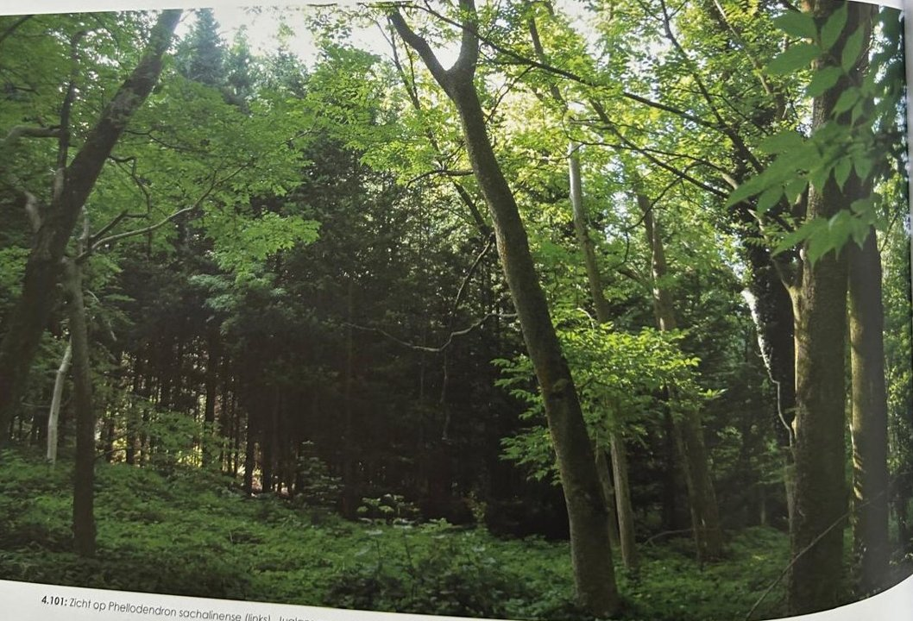
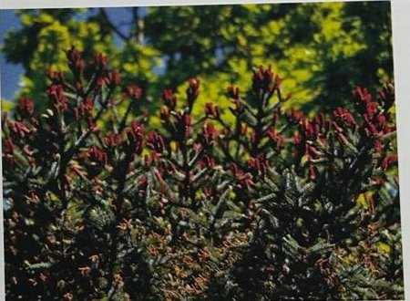
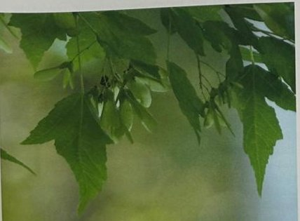

Groepen › Oude Wereld
36. Noord-China & Zuidoost-Siberië, Sachalin & Mantsjoerije

In de tijd toen het arboretum werd opgericht, was het lot van Mantsjourije en het eiland Sachalin nog niet beslist – het lag onder betwisting tussen de grootmachten Rusland en Japan. Het hedendaagse Mantsjoerije in het noordoosten van China, is nu niet alleen door de Japanse Zee van Sachalin gescheiden, maar ook door het Russische gebied boven Vladivostok. Er zijn weliswaar overeenkomsten tussen de vegetaties van beide streken, maar Mansjoerije is zuidwaarts duidelijk rijker aan ecotopen. In het moerassige noorden van Sachalin domineert vooral de Oost-Siberische lork, in de zuidelijke bergketens halen Oost-Siberische spar, Sachalinspar en nog meer Sachalinzilverspar de overhand. In de lagere zones komen ook loofhoutsoorten voor zoals de Ermanberk en esdoorns waaronder Tataarse esdoorn. Deze hoofdrolspelers zijn in Groep 36A mooi te bewonderen. Het donkere coniferenbos van spar en zilverspar staat ook in Mandsjoerije in het Xinganggebergte, daar komen ook Siberische spar, Koreaanse spar, Nikkozilverspar en Oost-Siberische zilverspar aan bod. In de lagere zones staat winterkaal loofbos, soms gemengd met Koreaanse den. De ons bekende boomgeslachten zijn er soortenrijker aanwezig dan in Groep 36B kon worden gepresenteerd : acht soorten esdoorn, vijf soorten linde, zeven soorten berk, …. Daarnaast geven typisch Aziatische geslachten present met bijvoorbeeld Amoerkurkboom.
Uit het boek
0,55 ha · 36 soorten · 528 bomen
- Klein maar een van de soortenrijkste groepen: Sachalin (36A) en Mantsjoerije (36B).
- Mantsjoerijse walnoot, Amoerkurkboom, Ermanberk en in de lente de rode mannelijke kegeltjes van de Oost-Aziatische spar.



Bron: Geografisch Arboretum Tervuren. Een wereldreis rond bomen (2020), p. 256 en volgende.
Deelgroepen
- 36 – Noordoostelijk China en het eiland Sachalin
Soorten in deze groep (35)
- Abies sachalinensisSachalinzilverspar · 157 bomen
- Picea jezoensisOost-Aziatische spar · 73 bomen
- Juglans mandschuricaMantsjoerijse walnoot · 40 bomen
- Betula ermaniiErmanberk · 36 bomen
- Betula platyphyllaAziatische witte berk · 30 bomen
- Phellodendron sachalinenseSachalinkurkboom · 30 bomen
- Fraxinus sieboldianaJapanse pluimes · 25 bomen
- Betula davuricaAziatische zwarte berk · 15 bomen
- Alnus hirsuta13 bomen
- Abies veitchiiVeitchzilverspar · 10 bomen
- Euonymus sachalinensis10 bomen
- Fraxinus mandschurica9 bomen
- Acer tataricum subsp. ginnala8 bomen
- Malus baccata8 bomen
- Abies specieszilverspar · 6 bomen
- Lespedeza bicolorHerfstbrem · 6 bomen
- Pinus koraiensisKoreaanse den · 6 bomen
- Aralia continentalis4 bomen
- Physocarpus amurensis4 bomen
- Tilia amurensisAmoerlinde · 4 bomen
- Berberis amurensisZuurbes · 3 bomen
- Quercus mongolica subsp. crispula3 bomen
- Spiraea japonica3 bomen
- Celtis koraiensis2 bomen
- Picea koraiensisKoreaanse spar · 2 bomen
- Rhus trichocarpa2 bomen
- Spiraea chamaedrifolia2 bomen
- Ulmus davidiana2 bomen
- Ulmus macrocarpa2 bomen
- Weigela middendorffiana2 bomen
- Acer tegmentosum1 boom
- Betula schmidtiiIjzerberk · 1 boom
- Larix russica1 boom
- Quercus species1 boom
- Tilia mongolicaMongoolse Linde · 1 boom
Tekst en foto: arboretum-tervuren.be (Koninklijke Schenking), met toestemming gebruikt.